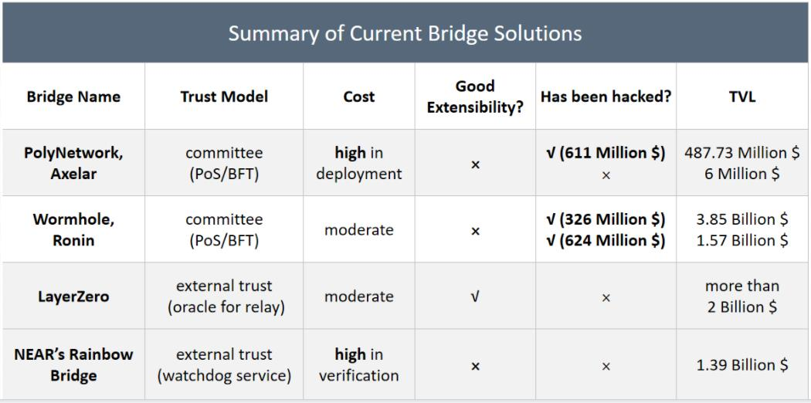

Our Advantages Compared with Other Cross-chain Bridges
Cross-chain bridges enable secure and efficient communication between two blockchains.
As it has been widely acknowledged that the blockchain ecosystem will get into a multi-chain future.
Thus cross-chain bridges are extremely critical for multi-chain interoperability.

There are quite a few cross-chain bridge projects in the wild today.
However, most of them suffer from either inefficiency or poor security.
In the following chart, we present a summary of the representatives.

Compared with existing cross-chain bridge projects, the overall merits of zkBridge can be summarized as follows:
1. Trustless
zk-SNARK provides the credentials of a valid block header on other blockchains,
and thus we don't need to introduce extra trust assumptions such as a trusted third party or a central committee.
As long as the security of both the connected blockchains themselves and the underlying light-client protocol is guaranteed,
and there's at least one honest node in the block header relay network, zkBridge is secure.
2. Permissionless and Decentralized
There's no minimum threshold for anyone to enter the block header relay network,
and thus any node can freely join the network to relay the block headers, generate proofs, and claim the rewards.
3. Extensible
zkBridge also allows plausible extensibility,
in that users can invoke the updater contract to retrieve certain block headers,
and perform their application-specific verification based on the block headers,
resulting in more freedom and wider usage on users' side.
4. Universal
Compared with some bridge projects that are restricted to certain blockchains,
the block header relay network and the underlying proof scheme in zkBridge
can connect almost any two blockchains together without triggering high cost, making it universal.
5. Fast and Flexible Transaction Processing
With our highly optimized recursive proof scheme,
block headers can be relayed within a plausibly short time (usually tens of seconds for proof generation),
and the relayed information can be quickly finalized as long as the proof passes the verification.
It's a giant leap compared with other proof-based cross-chain bridges which usually suffer from long latency due to the challenge window.